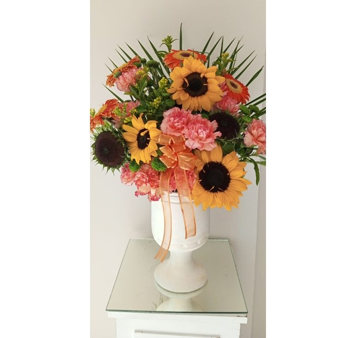
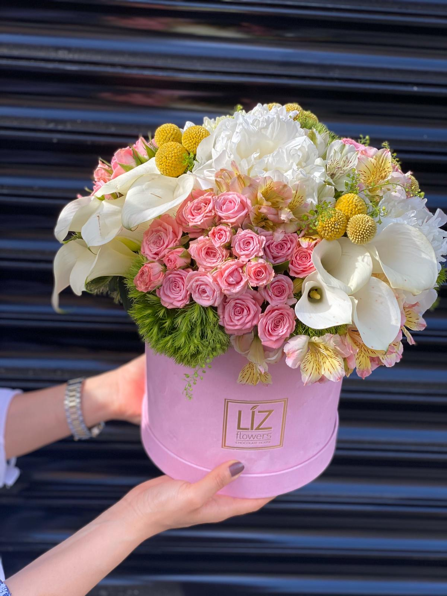
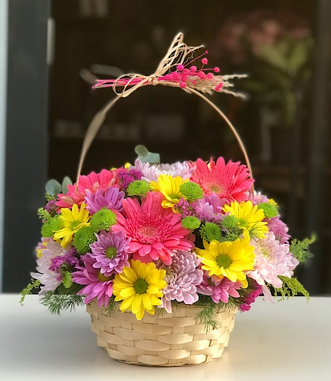
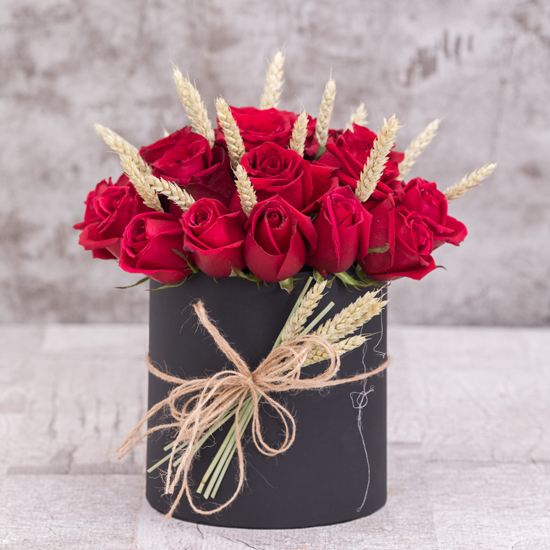
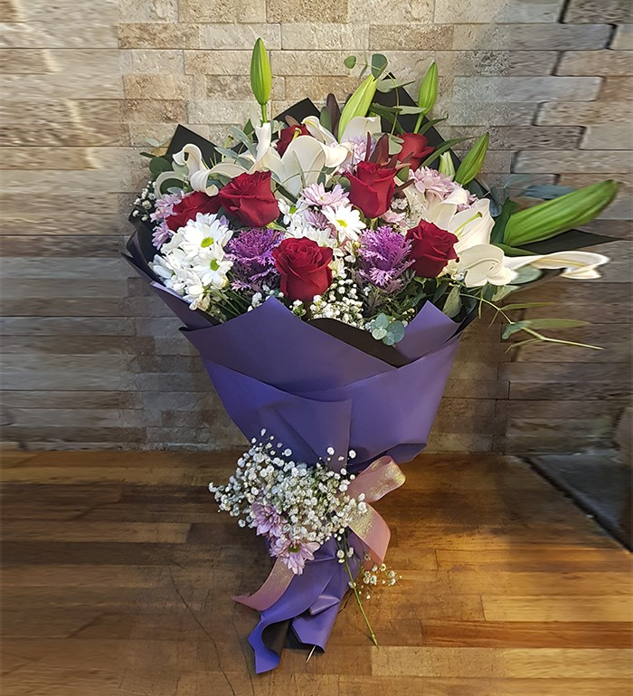
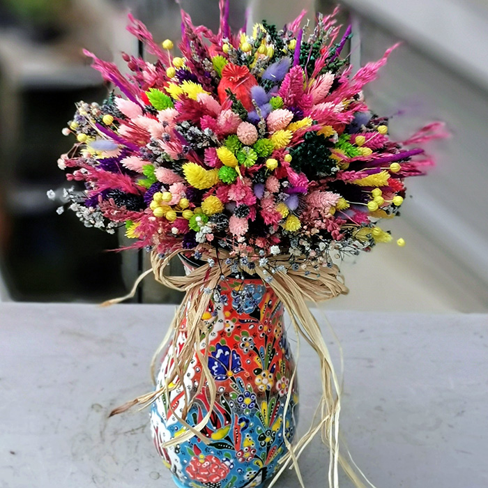
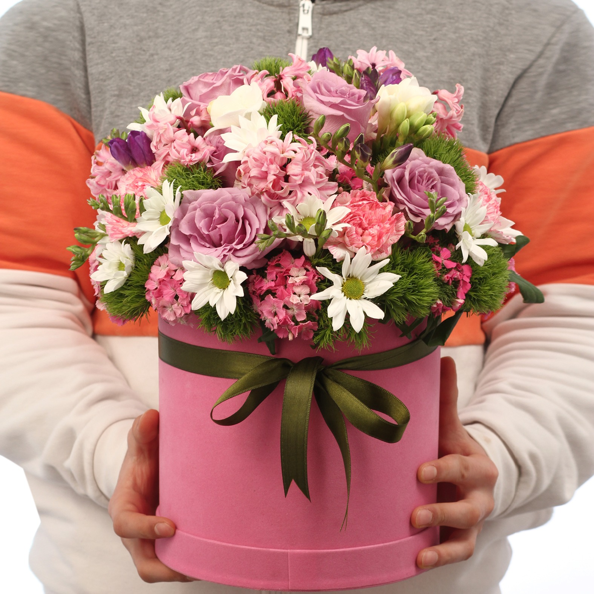
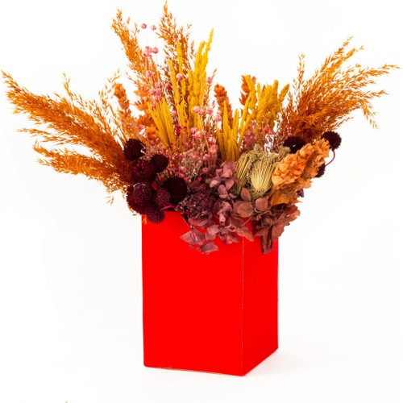

|

Özel Vazoda Aranjman |

Pembe Kutuda Çiçek Aranjmanı |

Çiçek Sepeti Aranjman |

15 Güllü Aranjman Çiçek |

|

|

|

Sonbahar renkleri kuru çiçek aranjmanı |
|---|
Çiçeklerimizi Nasıl Yetiştiriyoruz?
Çiçeklerimizi İstanbul Beylikdüzü mevkiindeki bahçemizde size özel olarak yetiştirip büyütüyoruz.
Burada işinde birbirinde iyi bahçıvanlarla, ziraat mühendisleriyle ve peysaj mimarlarıyla çalışıyoruz.
Özenle yetiştirilen ve toplanan çiçeklerimiz size kavuşmayı bekliyor.
Biz, çiçeklerin büyüsünü yaşatan ve doğanın güzelliklerini evlerinize getiren bir çiçekçiyiz. Kendi bünyemizde yetiştirdiğimiz çeşitli ve özenle seçilmiş çiçeklerimizle sizlere eşsiz bir deneyim sunmaktan gurur duyuyoruz.
Çiçek bahçemizde, estetik ve zarafetin bir araya geldiği çeşitli türlerde çiçekler bulunmaktadır. Gül, lale, orkide gibi klasik ve sevilen çiçeklerin yanı sıra daha nadir ve özel türler de koleksiyonumuzda yer alır. Her bir çiçeğin özenle seçilmiş olduğunu ve sağlıklı büyümesi için gereken özenin gösterildiğini bilmenizi isteriz.
Doğayla uyumlu bir yaklaşım benimsiyoruz ve çiçeklerimizi yetiştirirken doğal ve sürdürülebilir yöntemlere öncelik veriyoruz. Kimyasal gübreler veya zararlı böcek ilaçları kullanmak yerine, çevre dostu teknikler ve organik malzemeler tercih ediyoruz. Bu sayede, doğal ve sağlıklı çiçekler üretiyor ve çevreye olan sorumluluğumuzu yerine getiriyoruz.
Müşteri memnuniyeti bizim önceliğimizdir. Deneyimli ve profesyonel ekibimiz, size en uygun çiçekleri seçme konusunda yardımcı olmak için burada bulunmaktadır. Etkileyici bir düğün, özel bir kutlama veya sadece sevdiklerinize sürpriz bir hediye vermek istediğinizde, çiçek bahçemizdeki zengin çeşitlilikten faydalanabilirsiniz.
Web sitemizi ziyaret ederek, çiçek bahçemizdeki çeşitliliği keşfedebilir, size en uygun çiçekleri seçebilir ve güvenli bir şekilde satın alabilirsiniz. Size en taze ve canlı çiçekleri sunmak için her zaman hazırız.
Bizimle güzelliği paylaşmak için sizi çiçek bahçemize davet ediyoruz.